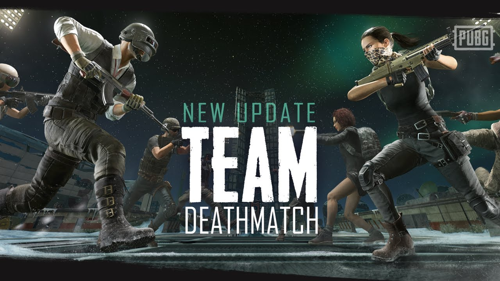

PUBG is founded on the premise of Battle Royale, but we know that sometimes you just need to
change it up a bit.
For those players, we’re happy to introduce Arcade,
a new feature that focuses on
the PUBG gunplay that you love, but in new
game types to thrill and challenge you. While the idea is to
continually add and rotate game types into Arcade, we’re starting with a tried and true FPS classic:
Team Deathmatch.
PUBG’s Team Deathmatch will bring intense 8v8 fights to 7 different battlefields pulled from your
favorite maps. Choose from several different weapon loadouts and utilize classic PUBG gunplay and
mechanics to frag your way to victory! Whether you enjoy the relentless challenge of 8v8 battles or
are just looking for a new way to train your gun skills in heavy combat scenarios, you can get right into
the action with Arcade.
For fans who prefer Battle Royale, not to worry! Our core focus will always be to bring you the most
realistic and intense Battle Royale experience out there!
Read on for more details on the Team Deathmatch game mode!
Visit: https://www.pubg.com/ For More Info , News , and Updates.
 - Neutral items held by Lone Druid's
Spirit Bear now show as held by Lone
Duid in the neutral items tab.
- Neutral items held by Lone Druid's
Spirit Bear now show as held by Lone
Duid in the neutral items tab.
- Neutral items that have been consumed now
show as "Consumed" in the neutral items tab.
- Neutral items that have been dropped on the
ground outside the fountain, or are otherwise
unaccounted for, are shown as "Unknown" in the neutral items tab.
- When you open the shop, if you had the neutral items tab open last, open the basic tab instead.
- The "Show Popular Items" button (star icon) in
the shop is now a saved preference, and will not
default to enabled when you start a new match.
- Toggling the "lock combining" option on items carried by the courier will no longer cause the courier to return to base.
Visit: http://blog.dota2.com/?l=english For More Info , News , and Updates.
Territory Studio earlier stated on their website that they are looking forward to a 2019 release for
the game.
They have admittedly worked on the marketing side of things for the game i.e. created
logos and idents.
Visit: https://www.cyberpunk.net/ph/en/ For More Info , News , and Updates.
The above screenshot taken earlier on the website shows exactly that. Do note that since then the
creative agency has updated their website and there is no mention of a release date anymore.
Visit: https://www.cyberpunk.net/ph/en/ For More Info , News , and Updates.
Seeing how the agency has worked closely with the game developers and management, it seems
credible enough to have an idea of when the game will release. Moreover, CD Projekt Red confirmed
a few days ago that they will in, in fact, be appearing at E3 this year which means that we will get to
see CyberPunk 2077 in action again or even a possible release date.
What do you guys think? Does this sound authentic enough to believe it? Why do you think the
website took down the release date? Let me know in the comment.
Visit: https://www.cyberpunk.net/ph/en/ For More Info , News , and Updates.